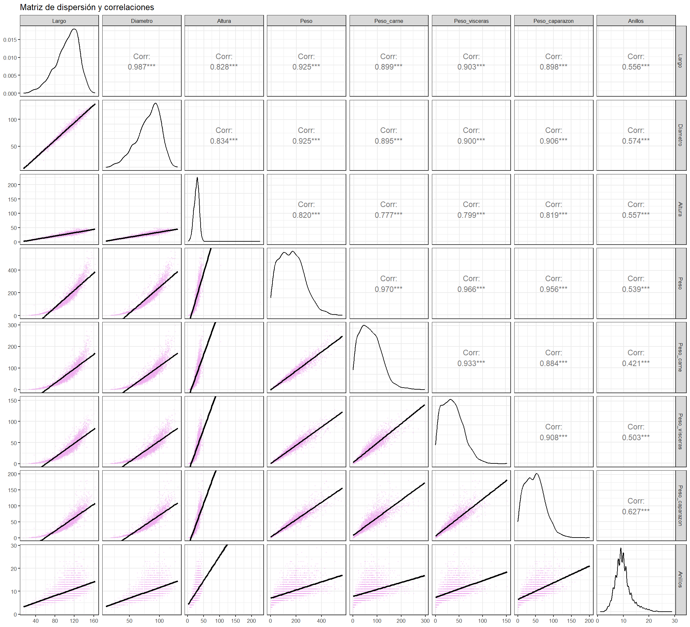

Capitulo 9 Correlación lineal
9.1 Matriz de dispersión y correlaciones
abalone %>%
select(all_of(predictores), Anillos) %>%
ggpairs(
upper = list(continuous = wrap("cor", size = 3)),
lower = list(continuous = wrap("smooth", method = "lm", color = col_point,
alpha = 0.3, size = 0.3))
) +
labs(title = "Matriz de dispersión y correlaciones") +
theme_bw(base_size = 8)
Interpretación: La matriz de dispersión y correlaciones muestra que existe una relación positiva entre todas las variables analizadas, es decir, cuando aumentan las dimensiones y el peso del abulón, también tienden a aumentar sus demás características físicas. Se destacan las correlaciones más altas entre largo y diámetro (0,987), peso y peso de carne (0,970), y peso y peso de vísceras (0,966), lo que indica asociaciones muy fuertes. Por otro lado, el número de anillos presenta correlaciones positivas moderadas con las demás variables, siendo la más alta con el peso del caparazón (0,627).
9.2 Correlación de cada variable con Anillos (Pearson, Spearman y Kendall)
Para cada variable: \(H_0: \rho = 0\) (no hay correlación) vs. \(H_1: \rho \neq 0\).
tabla_cor <- map_dfr(predictores, function(v) {
pe <- cor.test(abalone[[v]], abalone$Anillos, method = "pearson")
sp <- cor.test(abalone[[v]], abalone$Anillos, method = "spearman", exact = FALSE)
ke <- cor.test(abalone[[v]], abalone$Anillos, method = "kendall", exact = FALSE)
tibble(
Variable = v,
Pearson = unname(pe$estimate), IC95_inf = pe$conf.int[1], IC95_sup = pe$conf.int[2],
p_Pearson = pe$p.value,
Spearman = unname(sp$estimate), p_Spearman = sp$p.value,
Kendall = unname(ke$estimate), p_Kendall = ke$p.value
)
}) %>% arrange(desc(Pearson))
tabla_cor %>% tabla("Coeficientes de correlación con Anillos", d = 3)| Variable | Pearson | IC95_inf | IC95_sup | p_Pearson | Spearman | p_Spearman | Kendall | p_Kendall |
|---|---|---|---|---|---|---|---|---|
| Peso_caparazon | 0.627 | 0.609 | 0.645 | 0 | 0.692 | 0 | 0.534 | 0 |
| Diametro | 0.574 | 0.553 | 0.594 | 0 | 0.622 | 0 | 0.473 | 0 |
| Altura | 0.557 | 0.536 | 0.577 | 0 | 0.657 | 0 | 0.508 | 0 |
| Largo | 0.556 | 0.534 | 0.576 | 0 | 0.603 | 0 | 0.456 | 0 |
| Peso | 0.539 | 0.518 | 0.561 | 0 | 0.629 | 0 | 0.475 | 0 |
| Peso_visceras | 0.503 | 0.480 | 0.525 | 0 | 0.613 | 0 | 0.460 | 0 |
| Peso_carne | 0.421 | 0.396 | 0.446 | 0 | 0.540 | 0 | 0.399 | 0 |
mejor_pred <- tabla_cor$Variable[1]
cor_pred <- cor(abalone %>% select(all_of(predictores)))
cor_min_pred <- min(cor_pred[upper.tri(cor_pred)])INTERPRETACIÓN La tabla muestra que todas las variables presentan una correlación positiva y estadísticamente significativa con el número de anillos (p < 0,001). Según el coeficiente de Pearson, la relación más fuerte se presenta con el peso del caparazón (0,627), seguido del diámetro (0,574) y la altura (0,557). Por otro lado, el peso de la carne presenta la correlación más baja (0,421). Los coeficientes de Spearman y Kendall confirman esta tendencia, mostrando asociaciones positivas entre las variables y el número de anillos.